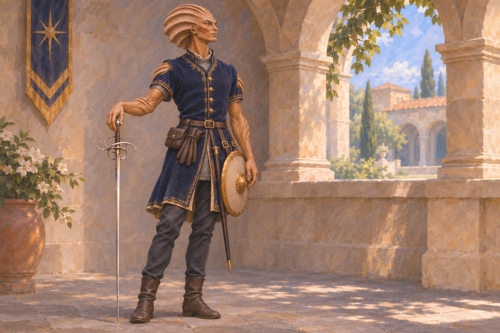

M2 · VERSION 7 · FINAL

A young Crest folk duelist rests lightly on his grounded rapier, wearing fine blue cloth over light mail. His shield hangs from buckled waist straps beside a scabbard, pouch and gloves; his relaxed bearing suggests a capable, high-status swordsman.
Prompt and references · Final selection record
M20-R1 · SELECTED ANIMAL REFERENCE

A broad, heavy adult rests beside its small cub. Both have a rounded face, enormous clawed paws and a layered russet-and-cream mantle. An omnivore with a bear-like life cycle, mainly in forests and also hills and plains; size, growth and mantle biology remain open.
M21-23 · VERSION 5 · SELECTED ANIMAL REFERENCE

A huge feathered heavyweight with a raised neck and crest, a slate, cream and ochre feathered body, a compact closed muzzle, powerful articulated legs and broad furred forepaws with stout, gently curved bear-like claws. Diet, habitat and size are open.